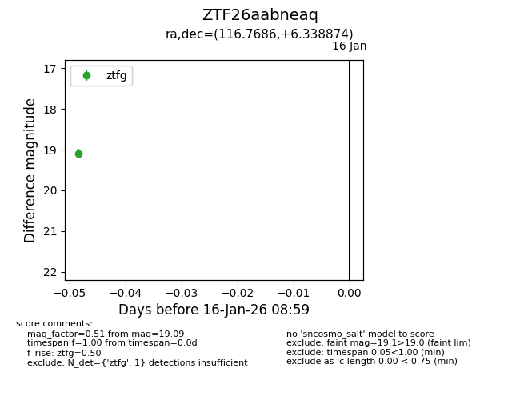
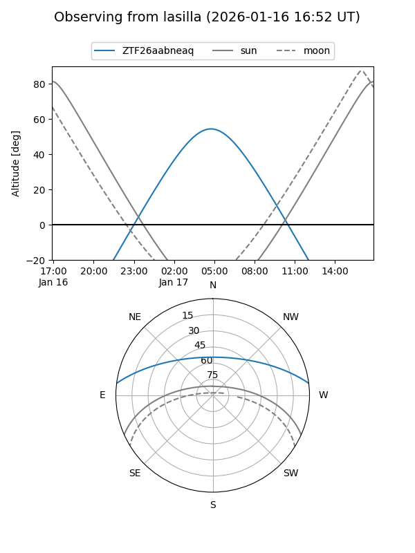
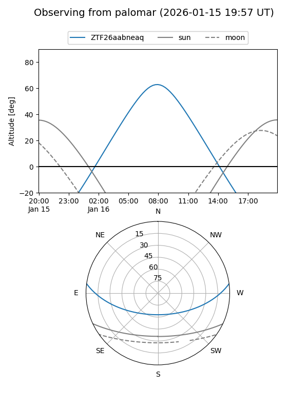

ZTF26aabneaq
Target ZTF26aabneaq at 2026-01-16 09:00
Aliases and brokers:
FINK: link
Lasair: link
ALeRCE: link
alt names
ZTF26aabneaq (ztf,fink_ztf)
Coordinates:
equatorial (ra, dec) = 116.7686,+6.33887
equatorial (HMS+DMS) = 07:47:04.46,+06:20:19.95
galactic (l, b) = (213.5660,+15.24659)
Flags:
Photometry:
last ztfg=19.09
1 ztfg detections
Lightcurve

Visibility


Additional plots